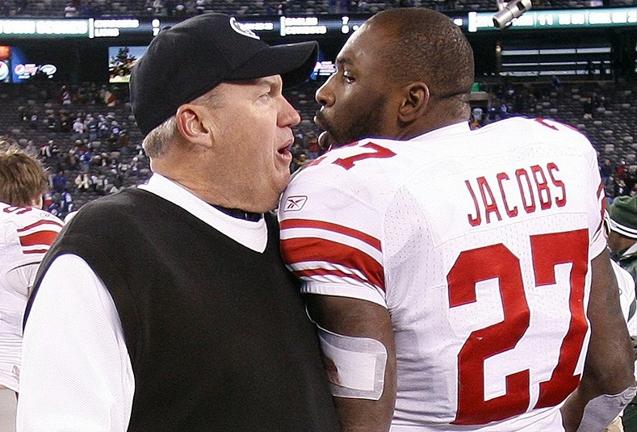

(Rex waiving goodbye to his last head coaching job)
Was the demise of the Bills all Rex's fault?
The long and short of it is that this was not entirely Rex's fault...
but for this sites purpose lets pretend it was
Rex was always known as a defensive guru
dating back to his days as the Baltimore Ravens defensive coordinator
he had consistantly good defences throughout his days as head coach of the New York Jets
| Year | Team | Defensive Ranking(yards) |
|---|---|---|
| 2005 | Ravens | 5 |
| 2006 | Ravens | 1 |
| 2007 | Ravens | 6 |
| 2008 | Ravens | 2 |
| 2009 | Jets | 1 |
| 2010 | Jets | 3 |
| 2011 | Jets | 5 |
| 2012 | Jets | 8 |
| 2013 | Jets | 3 |
| 2014 | Jets | 6 |
| 2015 | Bills | 19 |
| 2016 | Bills | 19 |
As you can see the defencive performances were consistantly good until Rex came to Buffalo
Now from that chart alone you would think that the Bills were just a lousy team...BUT
they in fact were not...they were ranked as the 4th best defence in 2014 a year before Rex arrived
So who do we have to blame for the decline......
If you feel the same about Rex sign up for the mailing list below!
ESPN has one of the best sites for sports and sports news. The site is very clean, has fast loading videos, and is laid out in a way that makes it easy to navigate.